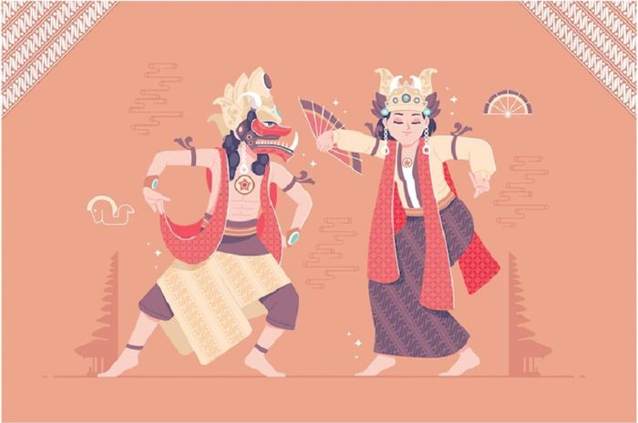
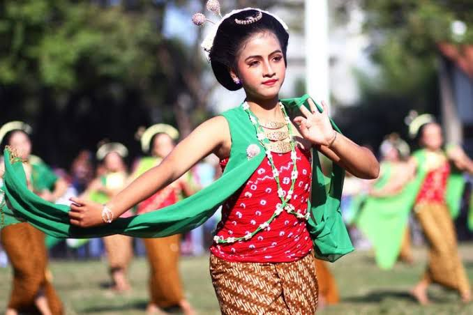

Tari Gambyong Pareanom merupakan salah satu seni tari tradisional khas Jawa Tengah yang memiliki keindahan dan keanggunan luar biasa. Tarian ini berakar dari budaya Keraton Surakarta dan sering kali dipentaskan dalam berbagai acara adat, seperti pernikahan, upacara panen, dan penyambutan tamu kehormatan.
Tari Gambyong Pareanom memiliki gerakan yang lembut dan penuh makna, menggambarkan keseimbangan antara keindahan, kesederhanaan, dan keharmonisan. Musik pengiringnya, yang menggunakan gamelan Jawa, semakin memperkuat nuansa sakral dan estetika tarian ini.
Keunikan Tari Gambyong Pareanom terletak pada gerakan tangan yang luwes, tatapan mata yang penuh ekspresi, dan langkah kaki yang anggun. Kostumnya yang didominasi warna hijau dan kuning melambangkan kesuburan serta kemakmuran, dua elemen penting dalam kehidupan masyarakat agraris Jawa.
Penari Gambyong juga mengenakan sanggul khas Jawa yang dihiasi bunga melati, menambah pesona dan kemegahan tarian ini. Semua elemen tersebut menjadikan Tari Gambyong Pareanom tidak hanya sebagai hiburan, tetapi juga sarana untuk melestarikan nilai-nilai budaya leluhur.
Sayangnya, di era modern seperti sekarang, keberadaan Tari Gambyong Pareanom semakin tergeser oleh perkembangan budaya populer. Generasi muda cenderung lebih tertarik pada hiburan digital dibandingkan mempelajari seni tradisional. Padahal, Tari Gambyong Pareanom merupakan bagian dari identitas budaya yang perlu dilestarikan.
Berbagai upaya dilakukan, seperti mengadakan pelatihan tari di sanggar-sanggar seni dan menyisipkan seni tari dalam kurikulum sekolah. Selain itu, dukungan pemerintah dan komunitas budaya juga diperlukan untuk mempromosikan tarian ini di tingkat nasional maupun internasional.
